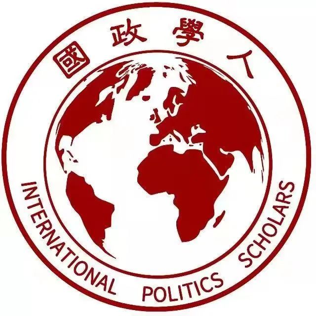
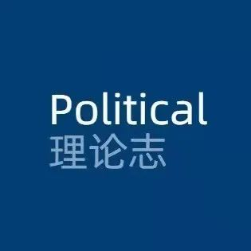
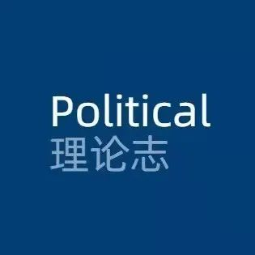

收录于合集
回归生活的政治 · 圆桌论坛
第六十五期
以学术公益为志业：
“公众号”学人谈
议题发布
近年来，随着新媒体的多元化发展，新媒体工具已经深度嵌入科研领域，为学术信息的传播、扩散、共享和知识服务开辟了新渠道、新途径，以微信公众号为主要介质的学术公益应运而生。学术微信公众平台，作为学术公益最重要的一种组织类型，借助微信庞大的用户网络，通过支持用户之间的知识社交和社会化阅读行为，为科研发展及学术共同体的构建、协作、会话、知识交流营造了新的契机和场景。
学术微信公众号迎合当下碎片化阅读的时代特征，聚焦学术圈的学术资源、学术新闻事件、热点趋势、论文推送、科研指导、名家访谈、学术报告等，不仅为微信用户提供了便捷的学术咨询服务，也起到了链接学人个体、整合学术资源、构建学术社群、推动科研发展的重要功能，已经成为科研领域不可或缺的重要公益性活动。本期圆桌邀请社科领域具有代表性的微信公众平台，围绕“新媒体学术公益”展开具体讨论：
1. 各公众号创办的心路历程，创办至今经历了哪些重要转折和关键事件？
2. 以各自微信平台为例，谈一谈如何认识和理解学术公益？当前中国学术公益情势对于推动学术研究发展具有何种作用和功能？
3. 当前中国学术公益的发展面临哪些困境和挑战？如何克服这些挑战？
4. 如何运用学术公益这个平台，在传播学术思想的同时讲好中国治理故事？

嘉宾介绍
Political
理论志
Political理论志创办于2019年，创办迄今已逐渐形成“以编译外文顶刊文献和原创学术内容为基础，并以传播转载国内前沿研究成果为己任”的办刊宗旨，致力于传递中外社会学、政治学等社会科学理论与方法。在学术各界的前辈专家和老师同学的大力支持下，理论志现已发布六千余篇原创编译、转载和专访等性质的推送。团队同时运营了微信公众号“Sociology理论志”与青年学者分享平台“青年群学”，并正拓展社会学与政治学相关的短视频项目。

公共管理共同体
公共管理共同体成立于2015年，是一个专注于公共管理学科的学术公益交流平台。2018年，平台初步成型，进入常态化运营，定期推送公共管理领域的佳作、书籍和资讯，传播公共管理知识。2019年-2020年，我们相继成立了“对话佳作”专栏和“海外版”，以追踪高质量的公共管理学术佳作，进一步拓展中国公共管理领域研究的国际视野。发展至今，公共管理共同体已经成为公共管理学科中知名度相对较高，关注人数相对领先的微信公众号。
国政学人
国政学人肇始于2014年，正式成立于2017年初。2018年10月，国政学人改版升级，专注国外权威期刊前沿学术动态，是国内首家大规模译介国际关系权威外文期刊的公益平台，累计编译文章1300余篇。2020年，国政开启学人访谈、讲座系列栏目，邀请了多位知名学者参与线上对话和讲座。国政共同体先后由200余位来自海内外名校的青年学者和高材生参与运营，读者群体达数十万人，成为国内国际问题研究领域具有重要影响力的学术公益平台。
 青马先声
青年先声于2020年6月成立，目前有“青马先声”、“特里尔青年”、“政治青年说”3个公众号以及B站、抖音、微博等矩阵平台，12个微信社群，公众号截止目前关注量累计超13万。青马先声与广西人民出版社、中国社会科学出版社、中国人民大学出版社等10余家出版社合作，与山东师范大学马克思主义学院、东北大学马克思主义学院等12个马克思主义学院合作举办讲座或者活动。参与主办的年度性活动有中国青年马克思主义大会、“青马奖”著作网络评选活动、马克思主义理论学术前沿系列讲座；开发的评价有全国高校马克思主义学院公众号影响力指数周榜；已连续举办青马V- Talk24期、青马读书会14期。
政文观止Poliview
政文观止Poliview成立于2017年初春，是一个由兴趣驱动的学术联合体。公众号成员主要为清华大学、北京大学、浙江大学、中国人民大学、吉林大学、中国人民公安大学等高校的硕、博研究生。公众号主要创作方向为海外前沿比较政治学和政治科学研究方法的成果译介，同时还致力于对国内外优秀作者的访谈及经典、前沿书籍的推介。

政治学人
政治学人正式成立于2014年，目前已经有20w+的支持和关注，平台成立的初衷是推介优秀的政治学学术作品，把政治学人们核心思考的问题和关怀由向外传递，通过微信公众平台这种新媒体形式促进学术成果的传播与交流。目前，政治学人已经打造出学人专访（2016）、圆桌论坛（2017）、顶刊编译（2017）等一系列品牌活动，创办“政治学人大学问”“政治学人大讲堂”系列品牌活动。连续四年开展全国性政治学著作评选、学术评价。坚守政治学阵地、推荐思想深刻、观点鲜明的学术作品，一直是我们的行动指南。

一、初心：我们为什么创办学术公众号？
政文观止Poliview

政文观止创办于2017年初，其初衷是探索更有效的学术训练方法，以此倒逼自己读文献、练习学术写作并强化学术交流，所以在内容上，创办伊始的推送内容以海外顶刊论文的中文编译为主。作为闲暇之余历史知识的搬运工，能有今日成绩实属不易，这些都归功于学界师友的关注与支持，在此，致以诚挚的感谢！
国政学人正式创办于2017年初，专注于国际关系领域的知识传播与学术研究事业。国际关系学科诞生百年来，美国等西方学者主导了传统的国际关系理论构建和议题设置，且中国国际关系学科的科学化进程依然呈追赶态势，导致国内外学术前沿信息存在非对称的现实。为了打破这层信息隔阂，国政学人开启并实施了长达数年的学术前沿编译计划，包括SSCI前沿编译、权威期刊速递等栏目，为广大师生读者搭建一个便捷了解国际前沿学术动态的窗口。此外，国政学人正建立起完善的学术交流体系，包括名家访谈、名家讲坛、青年讲坛、青年访谈等栏目，促进师生读者的学习交流。


国政学人

青马先声
青马先声创办于2020年6月，想法萌生于本人考研去目标院校找学长学姐问怎么复习、需要看哪些书？很清楚的记得“被冷眼”和无视。于是，为帮助“弱小”群体对人生选择有清晰的认知。公众号创立的目的或者说它承担的使命是全心服务于全国高校青年教师的学术交流、学生的理论学习、院校间的信息互通、学科学术资源的共享。这个过程中得到了诸多学界前辈专家（比如韩庆祥、欧阳康、程恩富、陈学明、商志晓、郑传芳等等）的支持与厚爱，在此表示衷心的感谢！
Political理论志创办之初，主要涉足学术公益的初衷在于传播分享国内高质量政治学、社会学学术研究成果，后来在学术各界的前辈专家、老师、同学们的大力支持下逐渐成长为致力于传递中外社会学、政治学等社会科学理论与方法的学术社群。为了促进推文主题的集中性，也为喜爱社会学研究的师友提供新鲜的社会学研究资讯。近期我们新开设了“Sociology理论志”公众号，未来，我们将主要在此公众号推送社会学相关领域的学术内容，而“Political理论志”公众号则主要还是聚焦于政治学和社会学交叉的相关议题。总的来说，理论志团队的初心是“感谢”——公众号一点一滴的发展，都与学界前辈专家和师友读者的支持与抬爱密切相关。在此，我们再次致以由衷的感谢！


Political
理论志

公共管理共同体

公共管理共同体创办于2015年，7年前我们意识到公共管理学科的各二级学科之间在理论基础和偏好的方法选择上都存在较大差异，所以当时我们起名为共同体，就是认为各个分支领域应当是研究和解决公共问题的“共同体”。实际上，现阶段这个名称有着更重要的意义，特别是当众多跨学科的研究成果和研究人员进入公共管理领域后，这个专业领域经常会出现“自家人不认识自家人”的情况。一些跨学科而来的研究者，人在公管，却在研究的议题上“抛弃了公共”或“泛化了公共”。所以，在公共管理学科形成一个学术共同体是非常有必要的。
建立政治学人的想法萌芽于2014年。当时，我们几个志同道合的朋友发现，和经济学、社会学等学科相比，政治学在学术界的影响力方面影响力较低。那个时候，政治学类的微信公众平台也很少，且许多人都是只关心自己研究的“一亩三分地”，对其他领域的研究关注度不高。这导致有很多本身学术价值和现实意义极高的政治学论文，没有得到应有的关注。建立政治学人的初衷就是希望能改善这一境况，推介优秀的政治学学术作品，把政治学人们核心思考的问题和关怀向外传递，通过微信公众平台这种新媒体形式促进学术成果的传播与交流。


政治学人
二、何为“公”：学术公众号能做什么？

政文观止Poliview

学术本应为“公”。“政见”公众号有一句话很打动人，叫“拆掉知识的高墙”。 当前，在学科建设取得显著成绩的同时，高校学科划分僵化的流弊，制约了研究者的创造力，也限制了学生探求知识的主动性。我想，通过学术公众号的写作尽量将前沿科研成果转述为较易理解的学术短文，可以在一定程度上克服“学科壁垒”现象，这也是我所理解的学术公益
我们常说政治学是一门“敏感”的学科，或是一门“无用”的学科， 如何在所谓“敏感而无用”的学科里找到学术公益的空间“令人欢喜令人忧” 。与自然科学，与经济学或法学等实用社会科学相比，我们国家的政治学基础研究相当薄弱，远远不适应政治发展和学术进步的现实需要，每个学术人都应负有推进中国政治学基础研究的责任，为推进中国政治学基础研究做出努力。
学术公益既是一项充满奉献精神的事业，也是连接学界师生、出版界刊物和政策制定者的桥梁，对推动学科发展与知识传播起到重要作用。 首先，国内政治学领域的学术公益平台主要还是依托于微信公众号来进行内容传播，这离不开微信生态系统便捷的信息发布渠道。第二，当前政治学领域的学术公益号以转载、编译、介绍学科相关的文章、资讯为主。相较于图书、杂志、报纸等传统纸质出版物在传播能力上的不足，学术微信号可以凭借独特的传播效率、传播范围、互动能力成为学界读者更加便捷地掌握学术前沿信息和学界新闻资讯的窗口。这对于学术出版方、作者还是广大的师生读者来说，都是喜闻乐见且相互受益的。第三，学术公益团队内部往往有着积极向上的学习氛围。团队志愿者依靠平台的号召力结识优秀学人，通过互帮互助收获学习经验，共同参与学术公益实现自我价值提升。


国政学人
政治学人

首先，什么是学术公益？可能有两个维度的解释： 一是团队运营的“公益性” ，以志愿精神为核心的团队运营模式就可称之为学术公益。这是一种比较朴素的理解，但却最为普遍。依照此逻辑，当下很多微信平台或多或少都是在从事“学术公益”活动； 二是学术生产的“公益性” ，即为学界生产开放的，但不以获利为导向的知识。就我个人而言，更倾向于将学术公益理解为一种责任或者使命。原因在于，从事学术生产活动，一日两日或可为，但长期坚持并且视之为志业，则非责任、使命而不可为之。
至于学术公益之于学术研究的功能，我认为有以下几个方面：
一是塑造学术品味。主要体现在对个人学术品味和鉴赏力潜移默化的影响。好的学术品味、鉴赏能力是做好研究的基础。政治学人的读者群体中，学生（本硕博）占了很大一部分，他们是未来学术研究的生力军。 公众号的日常推文，传递的是我们对于“什么是好的研究”“好的研究应该是什么样”的基本判断，而这无疑会潜移默化地影响读者朋友的学术鉴赏能力，进而影响未来学术发展的品质。 ****为此，无论是选文、推文，还是对主题的选择、内容的审核我们都有严格的流程，丝毫不敢懈怠。
二是营造开放氛围。一个有趣、有延展性和穿透力的研究问题往往是在诉说和分享中产生。 ****在政治学人组织的活动中，很多嘉宾老师往往不吝啬自己的学术观点，积极将自己正在关注、甚至正在撰文但尚未发表的原创思想抛之公开讨论。 ****事实证明，好的研究一定不是闭门造车。但这种开放性风尚的营造非一人之力在短时间内可为，为此，政治学人也一直在发挥自己的影响力，致力于营造开放问题的讨论和原创思想的生产传播 。 当然，这需要广大的读者朋友、优秀的同行一起努力。
三是打造优质学术生态。品味、氛围或许可以在短期内得到改善，但优质学术生态的创造则是一个长期任务。因为这不仅涉及到个人品味的提高，还涉及到不同学术团体、组织和理论之间的结构性关系问题。而政治学人的功能，就是为学界打造一个开放的服务平台，在这里，不同性别、身份、学科、专业的学人都可以发表自己的观点，是这个平台将大家“联结”在一起，回归学术的初心。
做好学术公益需要满足系列条件：一是要有奉献意识和担当精神。奉献精神是自觉的、不断的，是社会责任感的一种体现。作为一个有责任感的学术人，应当随时铭记公益精神乃是做学问的本原。二是要有博大的胸怀。“ 君子量不极，胸吞百川流 ”，公益精神要求公众号的推文更接“学”气，更能满足学术读者的阅读需求。三是在专业领域得到高度认可。学术公益的价值实现要落到实处，为新时代的国家政治、经济、社会、文化、科技等各方面的发展做出应有贡献。


青马先声

Political
理论志

英国社会学家John Soctt（约翰·斯科特）曾言道：“没有一个理论观点可以为社会学上有趣的问题提供所有答案。不应有任何虚假的宣称完成或拥有自己偏好方法的排他性优先权。也不应贬低他人的理论观点。 我们参与了一项共同的思想努力，必须进行相互尊重和容忍，并愿意讨论和辩论理论差异，而不是诉诸于规矩。” 无论是社会学还是政治学，都有学术公益的使命。当面对纷繁复杂的现实情境时，任何一种科学理论必须有逻辑上的自洽，还需“见招拆招”，曝光、理解与分析具有争议的社会话题。对于读者来说，学术公益能够使受众更加迅速获取最新的理论、方法，更全面地了解自己所关注的议题；对于学术公益的传播者来说，进行知识的转译、再论述本身也是一种新的知识生产。 总而言之，我们认为学术公益的目的在于让读者们与我们一起参与一项共同的思想实践。
我理解的学术公益就是把学术生产、成果或活动公益化。 从更高的站位来说，学术从业者做研究不仅仅是为了谋生，不仅仅是一份职业，更是把做学问当作一种实现社会价值的路径，当做一种为社会和国家发展提供力所能及力量的方式。 从某种意义上来说，学术本身就蕴含着公益属性。 尤其在当下的新媒体时代，学术的公益属性愈发显现，微信公众号、公益讲座和公益直播等学术公益活动活跃在各个学术领域，每个学科都在通过学术公益的方式发出属于自己学科的声音。
就公共管理共同体微信平台而言，我们作为聚焦公共管理学科的学术公益平台，希望平台主要能够在两方面有所实现：
其一，传播公共管理学术思想，证明“公共管理”一直在场。 公共管理共同体持续分享国内外的前沿公共管理研究成果，希望通过微信平台的方式扩大公管研究的传播力、传递公管学科的思想、发出公共管理声音。那么，公共管理何能在场？公共管理声音何以重要？用何艳玲老师的话来说，“一个好的国家是个体的生命体验能够在根本上影响整个国家的制度设计，一个好的政治和政府过程应该能够准确捕捉到个体的生命体验。”这是一个需要公共管理研究和公共管理思想的时代。
其二，传承公共管理学科精神，证明“公管青年”一直在路上。 作为一门聚焦“公共问题”的学科，“公共性”是公共管理特有的学科精神，它要求研究者具有公共情怀和公共精神。作为一个学术公益平台，在公共管理共同体，已有上百余名“公管青年”参与平台运营，这一参与过程其实就体现了“公管青年”的“公共性”品质。同时，我们也希望把平台所体现的“公共性”传递给正在进行、即将进入或未来会进入公共管理领域的研究者们。我们希望通过公共管理学术公益传播，让他们在获取公共管理理论知识的同时，感受公共管理学科中“公管青年”的公共精神，实现学科精神传承。

公共管理共同体
三、挑战：当下学术公益平台面临哪些发展困境？

国政学人

第一，学术公益平台的定位意味着这项事业本身就是一个“良心活”。 一般情况，公益平台为坚守初心往往不会寻求商业化，但这也会随之带来缺少资金的问题。随着平台和团队的规范、规模化运营，这个问题会日益严峻。更多情况下，公益平台的运营基本靠志愿者们的一腔热血和奉献精神。此外，学术公益团队的成员多是在读学生和“青椒”，这就意味着成员需在个人学习、工作之余来参与学术公益事务，尤其是对于组织者，背后的辛苦和精力更多。
第二，著作权问题的质疑。 正式发表的文章著作权一方面属于出版单位，但另一方面也伴随着著作权限制。根据《中华人民共和国著作权法》第二十二条规定，在下列情况下使用作品，可以不经著作权人许可，不向其支付报酬，但应当指明作者姓名、作品名称，并且不得侵犯著作权人依照本法享有的其他权利：为学校课堂教学或者科学研究，翻译或者少量复制已经发表的作品，供教学或者科研人员使用，但不得出版发行。以自媒体为载体的学术公益平台如符合以上情况，原则上不存在侵权问题，但需根据事实情况来做判断。
与兄弟公众号的科层化组织不同。政文观止公众号的一个特点可能是聚焦个人研究需求。我们的组织比较“松散”，团队成员多围绕自己的研究兴趣进行学术推送的创作与探索。这种个人化的平台色彩使得公众号的学术写作与我们个人的学术研究结合得很紧密。我们始终认为 学术兴趣是维持输出质量的关键 。当写作推文时，第一推送力永远是 “我想表达什么” 。当然，这种松散的组织结构也限制了我们进行持续、有规律、有规划产出的能力。比如随着正式学术写作压力增大，非正式学术写作的空间被压缩时，我们的推送也会陷入瓶颈期。
第二个困境就是推送内容被举报的问题。我们进行学术编译的难度可能并不亚于学术创作，对编译内容加原创也主要是为了保护编译成果。所以，也 期望读者能对团队学子多一些包容心和同理心 。


政文观止Poliview

政治学人

学术公益不是凭空发展，而是由“硬性”和“软性”两个载体依托。 “硬性”指的是各种技术，诸如微信编辑、排版、平台技术的优化；“软性”则包括从业者的学术自觉和责任感。
从这两方面看，大致是喜忧参半的。一方面，技术的发展无疑推动了近些年学术平台的兴起，使得百花齐放的学术传播成为可能；另一方面，新时代是产生大理论的时代，中国场景的丰富性也为好的学术生产提供了坚实支撑。只是，在有了这些技术和学术作品之后，总需要一群“公益人”将其二次传播。我们就是这群人中的一隅。于是，“人”的重要性就凸显出来了。 如何培养出有意愿、有能力、并且愿意持续从事学术公益的“接班人”，对于学术公益的影响迫切又重要。 但现实中这个问题不容乐观，部分是因为个人精力、职业选择而转投他路，部分因为缺乏长期热爱和坚守而放弃。
当然，我们平台有比较完善的新人培训办法和素质扩展方案。只是，学术公益的属性决定了团队本身并不是严格的科层组织，很难依靠正式机制进行行为约束，也无法提供足够激励机制，这也导致“人才流失困境 ” 。我们能做的，可能就是尽量为每一个有志于学术公益的学子提供发挥个人能力的平台，并愿意和他们携手共进。
一是自身组织建设的困境。 学术公益普遍被认为是一种“吃力不讨好”的工作，导致团队成员整体能力、积极性不高，想让更多的人联合起来，形成真正的学术共同体很难。 二是学生身份的认同度。 学界普遍以“身份标签”划分等级，在“学历隐形歧视”背后进行沟通和合作，团队成员往往经历无法被看见的痛。

青马先声

Political
理论志

学术公益最重要的挑战是我们自己 。 如何超越自我，做出更高质量的原创推送，如何在与同行的都交流中不断修正、深化自身的观点，培养自身的品牌和风格，这需要我们坐下来多思考，围着来多交流，站起来多实践。另外面临版权问题的质疑也是当前学术公益公众号面临的一大瓶颈，未来需要学术公众号共同体共同面对。
四、瞭望：如何链接学术传播与中国治理故事的书写？

政文观止Poliview

讲好中国故事不能离开比较视野，以及历史连续性的关怀。 政文观止总的发力趋势主要集中在比较政治方面，尤其关注古代中国这一领域，契合了讲好中国故事的关键一环。这一兴趣点与兄弟公众号在讲好中国故事上形成了角色的互补与功能的配合。
一是在坚守国家立场的前提下，不忘初心、做到客观与中立。公益平台不应成为某类研究路径的代言人，而应该是百花齐放、百家争鸣的开放性论坛。 ****二是致力于打破信息壁垒、推动高质量内容的传播。国内外不同的知识生产与传播体系造就了严重的信息不对称，外文编译类平台可以帮助不便于及时检索、获取外部信息的学人搭建便捷的知识窗口。三是充分利用传播载体的灵活性、时效性，加强同学术界科研院所、出版机构和师生读者的互动，包括并不限于举办学术研讨会、论文工作访、学人访谈讲座以及学术征稿会等形式，搭建一个知识分享、信息汇集、传递学术心声的媒介。四是一直以来，西方学界掌握着学科理论发展和议题设置的话语权，作为中国政治学界的公益平台，应该有传递中国声音、影响学科健康发展风向的志气，积极为中国社会科学的知识创新和内容传播添砖加瓦。


国政学人

青马先声

青马先声创设之初，立足于马克思主义理论学科所有二级学科，着重于本硕博和青年教师，发挥专家引领带动、朋辈讲评互学作用。一直以来，公众号坚持用学术讲政治的原则，与各马克思主义学院联合举办学术前沿系列讲座，围绕“七一讲话”“十九届六中全会”等提出的重大命题进行解读。
理论志未来的学术公益工作重心要精心选编彰显新时代“中国主张、中国智慧、中国方案”的优秀学术作品，发挥好新兴媒体作用，讲述好中国故事，传播好中国声音。 未来，我们要借助学术编译平台优势，打破中西方知识生产和传播的信息壁垒，继续推介具有国际影响力、感召力、塑造力的中外学术成果。
 

Political
理论志
公共管理共同体

一方面，传播基于中国治理实践的公共管理研究。公共管理共同体发起过“中国治理故事论坛”，旨在推动青年博士生围绕公共治理的相关议题，激发博士生扎根田野的激情，用学术话语讲好中国治理故事。姜晓萍教授也曾讲过，讲好中国特色治理故事要坚持“制度自信”、探索“理论创新”、聚焦“中国实践”、善于“对话世界”。 尽管从事理论研究的我们要有一定的理论幻想力，但不能天马行空地想，我们的研究基础一定是真实的治理和具体的实践。 之后，我们会继续选择有中国治理故事的公共管理研究，争取组织筹划中国治理故事对话，为中国治理故事的传播和交流提供平台。
另一方面，挖掘学术观点背后的中国治理故事。 实证研究是讲好中国治理故事的关键渠道。 只是在研究过程中，我们往往把侧重点放在了实证过程的设计与操作，轻视了结论的理论阐述与讨论。又或者，在实证研究的结论阐述与讨论中，缺乏相应的中国治理故事。所以，平台的对话佳作栏目将继续对话实证公共管理研究中形成有创新、有意思观点的文章，从对话中呈现中国治理故事。
新时代是产生大理论的时代，中国场景的丰富性为好的学术生产提供了坚实支撑。 从各个平台的功能来看，传播学术思想本身就是中国治理故事的一部分，我们也是在用自己所从事的志业来记录中国的现代化改革之路。 在这个意义上，我们所从事的志业，本身就是中国治理故事的记录者、叙说者。 ****值得提及的是，最近几年，我们也推出了政治学人·大学问等一系列品牌活动，希望能够对传播中国的治理故事有所裨益。相比于个体，平台的受众更为广泛。这要求我们在主题、内容的选择上要做到学术自觉，坚守自身站位，做好价值判断。


政治学人

点击下列链接即可跳转被种草的学术公众号噢
（按照拼音排序）
负 责 人：杨 琳
编 辑：柴金来、金 静
初 审：林佳怡
终 审：大 兰、王 铮